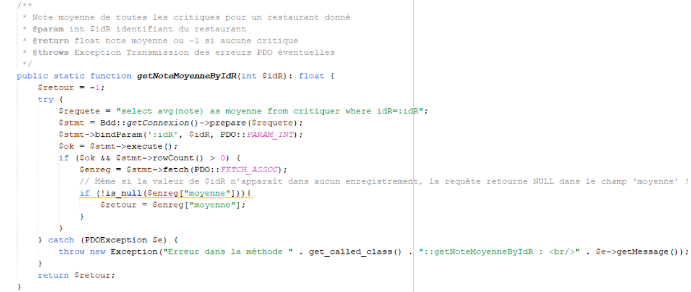
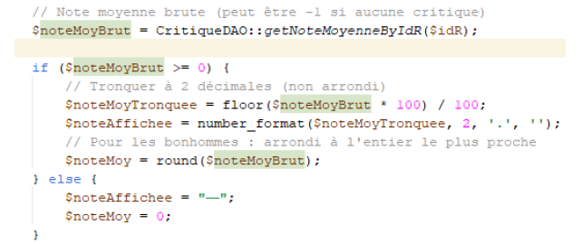

Ticket 7 - Affichage de la valeur de la note moyenne des restaurants
L'objectif de ce ticket était de afficher la valeur moyenne des meilleurs restaurants afin quon puisse voir les notes exactes et non seulement un classement.
Modifications réalisées :
- Modification de la fonction
getNoteMoyenneByIdRdu fichierCritiqueDAO.class.php. -
Illustration de la modification :
Code original dans
vueDetailResto.php:Remplacé par :
 - Modification de
vueDetailResto.phppour afficher correctement la note moyenne du restaurant.